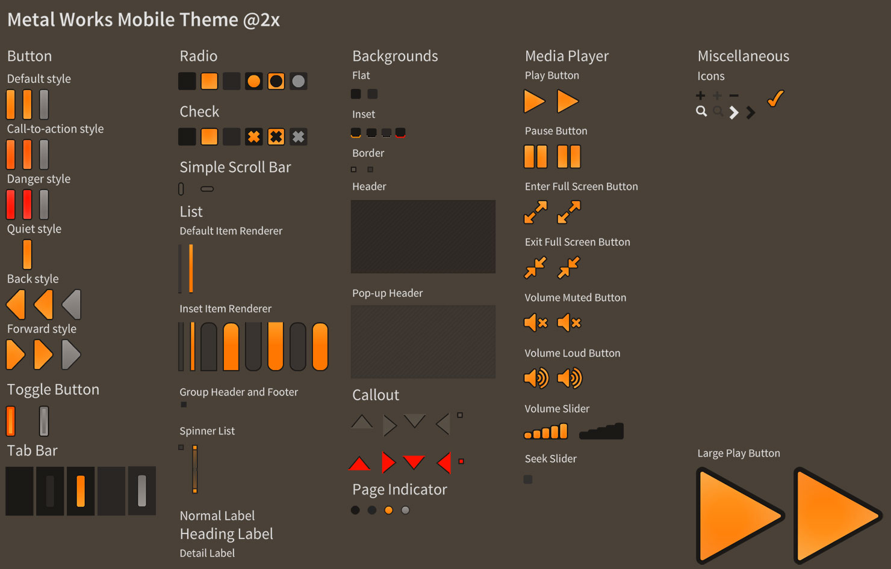
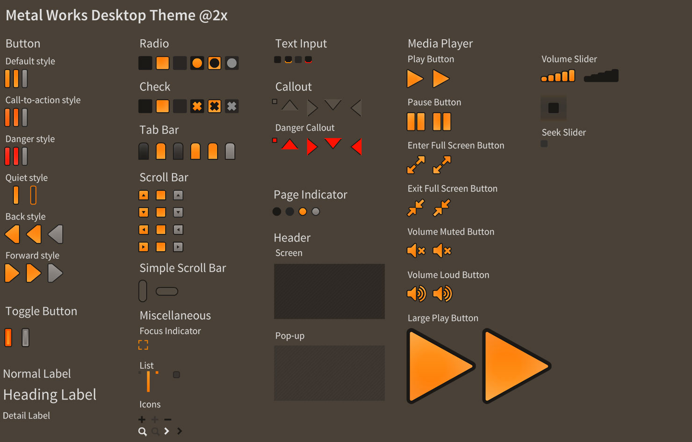
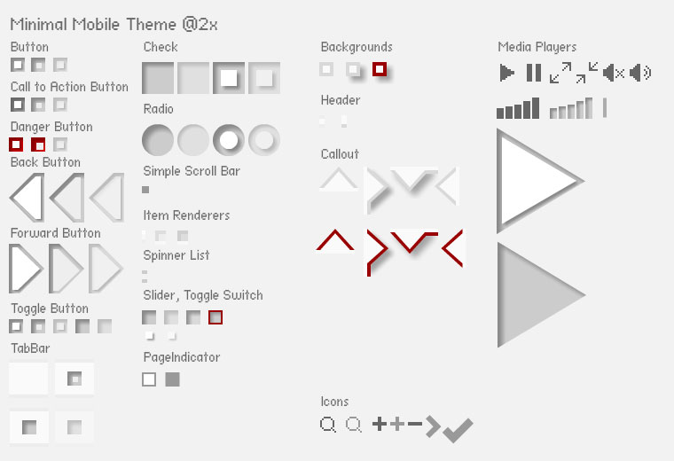
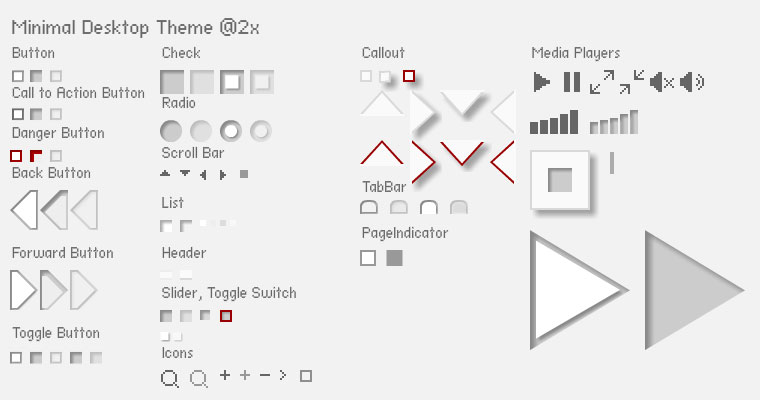
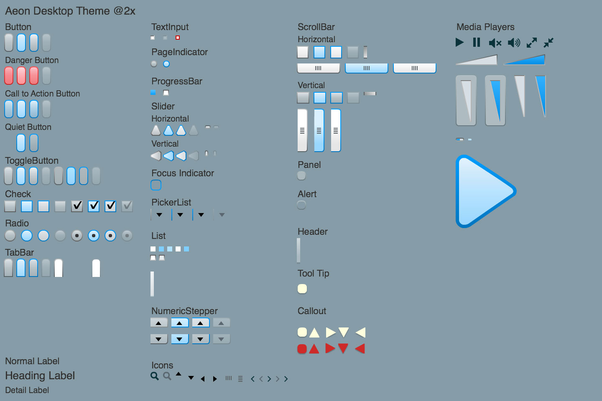
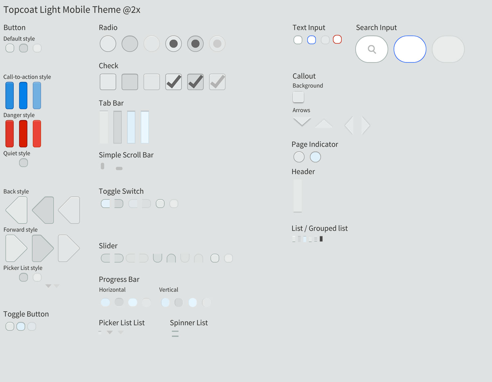

Original design sources for Feathers example themes
If you'd like to modify the appearance of an example theme provided with Feathers, you may download the original source files below. Each theme is available as a FLA file for Animate CC, where you can modify the original vector artwork and export a new sprite sheet for Starling. Alternatively, you may download a set of individual PNG files that may be used with other tools, such as Texture Packer.
Metal Works Mobile Theme

Metal Works Desktop Theme

Minimal Mobile Theme

Minimal Desktop Theme

Aeon Desktop Theme

Topcoat Light Mobile Theme
